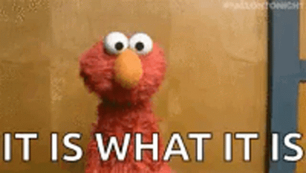

Understanding Culture
If you live in a lively cosmopolitan country, and are interested in learning about other cultures, this is the perfect place to learn how to do so. There are several approaches, but the most important is to realise that we're all simply humans trying to do our best. This website will assist you if you wish to embrace cultural differences, learn how to appreciate cultural differences, or converse with people from other backgrounds. Our culture influences how we work and play, as well as how we see ourselves and others. It has an impact on our values, or what we regard to be good and bad. This is how the society in which we live has an impact on our decisions. However, our decisions have the potential to affect others and, as a result, help shape our society.
What is 'Cultural Awareness?'
Cultural awareness, also known as cultural sensitivity, is the recognition of cultural differences and similarities without passing judgement on people based on them. You can observe cultural variations without labelling them as 'good' or 'bad,' or 'right' or 'wrong' if you have a nonjudgmental perspective. This does not imply that you must be well-versed in other cultures. It just entails being open-minded and willing to ask questions in order to learn more rather than reacting with a knee-jerk reaction to anything you don't agree with.
Why is 'Cultural Awareness' important?
Australia is a super-multicultural country, which means within the country the individuals and customs from many other countries and cultures can be seen and enjoyed. You'll almost certainly meet a lot of new people and encounter a lot of new circumstances. Increasing your cultural awareness, or understanding of other cultures, allows you to have more meaningful interactions with those around you. You're developing your empathy and regard for others, as well as celebrating your differences and commonalities. As a result, you are less inclined to treat someone differently simply because they are of a different culture or ethnicity.
Different races, Yet we are the same
A big misunderstanding
Even if people from different parts of the world might or might not be of the same race, it doesnt matter. We all are the same people of our planet Earth. Having a diffent race can't be a reason for assumptions on a person's culture and their background. Understanding that a persond doesn't have anything to with their skin color and race. Ofcourse, there are instances when people realize that people from different races do have different cultural beliefs and traditions, but again that can't change anything. Every person is different and that's a fact and it's their choice. We have to accept this fact and move on from our past where different races were treated differently.
Different classes and backgrounds, Yet we are the same people
Even after the differences between all of us, we are similar
Different classes and backgrounds can't change the fact that a person needs to be treated differently. People tend to set one-minded mindsets about people of different cultures, class, and backgrounds. This is simply because of what they have been learning and hearing about the other cultures and classes since day 1 of their existence. Quite literally, the misunderstandings all start from what families and the circle a person is living in. Please stay open minded and stop assuming things which are unreal.
Gender Equality being affected by culture
Gender equality is a must no matter which culture, religion, class, or background they are from
Women have been ostracised from the cultural scene in particular. They encounter several impediments to equal access, contribution, and participation in theatre, film, arts, music, and heritage, preventing them from realising their full potential and impeding social and inclusive sustainable development. Although this whole topic is a different from what we are discussing, it is important to realise that the gender of a person can't change the fact that they miss on something. This particular topic could be taken as a disadvantage of a few cultures.
Ways to build Cultural Understanding
It's all too tempting to remain with what you know rather than go out and meet new people. Actively attempting to comprehend and accept cultural differences, on the other hand, can open up a whole new universe of possibilities. Culture is defined as a collection of people's shared views, values, and assumptions that learn from one another and educate others that their actions, attitudes, and viewpoints are the proper ways to think, act, and feel. Culture is something that can be learnt. It is beneficial to consider culture in the following five ways:
Become self-aware
Work out your own personal prejudices, beliefs, and values. This includes prejudices regarding your own cultural heritage. Yes, it can be difficult, but by doing so, you'll be able to consider how these characteristics may influence your attitude to and understanding of differences. You might want to try: Consider the assumptions you make about your friends, classmates, coworkers, and random individuals you see on the street. What preconceptions do you have about persons from your own family?
Do your own research
Learning about different cultures can be a great way to develop an understanding of cultural diversity. And the best way to learn is through the available online resources. Maybe checking out some foreign films on online web-video players such as Netflix or Amazon movies, or attending a local food festival, and other such resources could really help you to do what you want to do.
Talking and interacting to someone from a different cultural background
Try and get to recognise a person from a one of a kind cultural history better. You don’t always need to ask them at once approximately their culture, however via way of means of studying them as a pal or peer, you’ll mechanically discover greater approximately their lifestyles and experiences. Just being curious and open-minded may be helpful. You ought to attempt: Have a talk or catch-up with an acquaintance, buddy or coworker that you've desired to get to recognise better. Remember to deal with them much like you'll each person else, and do not think about them best as a manner to get to recognise approximately different cultural backgrounds. If you’d as a substitute attempt your success online, there are webweb sites that assist you search for an worldwide penpal. This is likewise a terrific manner to instruction your language abilities if you’re studying a language.
Travelling!
One of the first-class methods to revel in and apprehend different cultures is to without a doubt stay amongst them. It may take some time to store for, however making plans a ride remote places to a rustic you’re interested by may be the first-class manner of establishing your self as much as new cultures. You ought to try: Check out a few digital journey and records reports from the consolation of your very own home.

Be more accepting
It's not always simple to recognize cultural differences for several reasons. In these cases, the best course of action is to just accept that some individuals are different and that this is fine. To accept someone, you don't have to understand or even agree with them. You might want to try: Make an effort to be empathic to those around you and to be aware of your own ideas about others. Make an effort not to compare or criticize. Find out how you may improve your acceptance skills.
Culturally different, with diverse opinions
Even if you hear or read anything about a certain culture, it's crucial to remember that not everyone from that culture acts, thinks, or believes the same way. People from diverse cultural origins are not all the same, just as not everyone you know has the same ideas. Cultural diversity can be seen in: Culture, Religion, Ethinicity, Language, Nationality, Sexual orientation, Gender, Race, Age, Disablity, Health differences, Geographic Locations, Etc.
Consider Alternates to sterotypes
Making judgments based on a single point of view is one of the most challenging aspects of recognizing cultural differences. Instead of making broad-brush judgments, conduct your own study and make an attempt to understand more about them. Stereotyping persons from various ethnic origins has the potential to negatively affect their quality of life and chances.
Each individual is distinct and unique
The most important thing to remember is that everyone has their own distinct beliefs, habits, and ways of life, regardless of their cultural origin. The sooner you recognize that everyone is unique, the simpler it will be to comprehend and accept cultural differences.
Different races, yet we are the same
All human beings are born free and equal, according to equality. Equality assumes that everyone has the same rights and is entitled to the same amount of respect. Everyone has the right to be treated fairly. This implies that laws, rules, and programmes should not be discriminatory, and that public authorities should not apply or enforce them in a discriminatory or arbitrary manner. Non-discrimination is a key component of the equality concept. It assures that no one's rights are infringed upon because of race, colour, sex, language, religion, political or other beliefs, national or social origin, property, or birth. Discrimination on some additional grounds, in addition to those above, may be illegal. Age, nationality, marital status, handicap, location of residency within a country, and sexual orientation are among the grounds.
Racism is a whole other topic of discussion. And realizing that each culture is important and that everyone deserve the equal rights and oppurtunities, would itself end racism. Racism can cause a lot of damage to both - an individual and a community. So instead of being racist and making stereotypes, understand their perspective and how they would feel, would make things better.
Different classes and backgrounds, yet we are the same people
The fact that we all have a different background and class can't change the fact we all deserve to be treated equally. All of us have different opinions about things and thats what makes us all different. Everyone who has an opinion about something will thing they are right and others are wrong. We can't really do anything about that, but try to make them understand how they could be wrong and explain why everyone deserves cultural equality. A person's culture, traditions, and background their personality and the way they think. That's what makes all of us different. But these differences can't be a reason for someone to be treated unequally. People who are treated unfairly are simply following their own traditions, it's the for the people who are mistreating them. It is a simple logic which they should understand and implement.
Gender Equality being affected by culture
Uneven treatment or views of people depending on their gender are referred to as gender inequality. Differences in socially imposed gender roles cause it. Gender systems are frequently dichotomous and hierarchical; gender binary systems may represent inequities present in a variety of aspects of daily life. Distinctions, whether objectively based or socially manufactured, are the source of gender disparity. Gender identities and gender relations are critical aspects of culture because they shape the way daily life is lived in the family, but also in the wider community. In the domains of heritage and creativity, the UNESCO study on Gender Equality, Heritage, and Creativity emphasises the importance of increasing discussion, research, and public awareness about equal rights, responsibilities, and opportunities for women and men, girls and boys. Limited participation of women in decision-making positions; discrimination in certain activities; limited opportunities for continuing education, capacity building, and networking; women's unequal share of unpaid care work, poor working conditions (e.g., part-time, contract, or informal work); gender stereotypes and fixed ideas about culturally appropriate roles for men and women are all symptoms mentioned in the report.
The report, which was initiated by UNESCO's Culture Sector, brings together for the first time research, policies, case studies, and existing statistics on gender equality and women's empowerment, conducted by the United Nations Special Rapporteur on cultural rights, Farida Shaheed, as well as government officials, research groups, think tanks, academics, artists, and heritage professionals. This paper provides suggestions for governments, policymakers, and the international community in the fields of heritage and creativity.